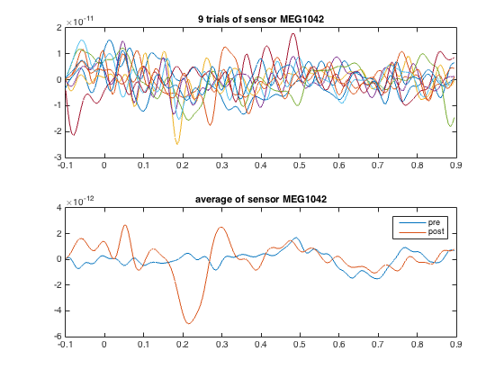

MEEG dataset operations
This example shows MVPA analyses performed on MEEG data.
The input dataset involved a paradigm with electrical median nerve stimulation for durations of 2s at 20Hz.
The code presented here can be adapted for other MEEG analyses, but there are a few potential caveats: * assignment of targets (labels of conditions) is based here on stimulation periods versus pre-stimulation periods. In typical analyses the targets should be based on different trial conditions, for example as set a FieldTrip .trialinfo field. * assignment of chunks (parts of the data that are assumed to be independent) is done randomly. In typical analyses they can be based on different runs, with one chunk value per run. * the time window used for analyses is rather small. This means that in particular for time-freq analysis a lot of data is missing, especially for early and late timepoints in the lower frequency bands. For typical analyses it may be preferred to use a wider time window. * the current examples do not perform baseline corrections or signal normalizations, which may reduce discriminatory power.
Note: running this code requires FieldTrip.
- For CoSMoMVPA's copyright information and license terms, #
- see the COPYING file distributed with CoSMoMVPA. #
Contents
get timelock data in CoSMoMVPA format
% set configuration config=cosmo_config(); data_path=fullfile(config.tutorial_data_path,'meg_20hz'); % show dataset information readme_fn=fullfile(data_path,'README'); cosmo_type(readme_fn); % reset citation list cosmo_check_external('-tic'); % load data data_fn=fullfile(data_path,'subj102_B01_20Hz_timelock.mat'); data_tl=load(data_fn); % convert to cosmomvpa struct ds_tl=cosmo_meeg_dataset(data_tl); % set the target (trial condition) ds_tl.sa.targets=ds_tl.sa.trialinfo(:,1); % 1=pre, 2=post % in addition give a label to each trial index2label={'pre','post'}; % 1=pre, 2=peri/post ds_tl.sa.labels=cellfun(@(x)index2label(x),num2cell(ds_tl.sa.targets)); % just to check everything is ok cosmo_check_dataset(ds_tl);
Summary
-------
MEG data in raw, time-locked and time-frequency formats.
Contents
--------
- subj102_B01_20Hz.fif raw MEG recording
- preproc.m Matlab preprocessing script (based on
FieldTrip)
- subj102_B01_20Hz_timefreq.mat Time-locked data (generated by preproc.m)
- subj102_B01_20Hz_timelock.mat Time-frequency data (generated by preproc.m)
- LICENSE License file
- README This file
Methods
-------
The dataset involved a paradigm with electrical median nerve stimulation with a
human participant for durations of 2s at 20Hz. Data was acquired at 1khz using
a neuromag306 system.
Trial info in the .mat files: 1=pre-stimulus, 2=peri/post-stimulus
License
-------
The contents are made available by Nathan Weisz <nathanweisz |at| me.com> and
Gianpaolo Demarchi <gianpaolo.demarchi |at| unitn.it> under the Creative
Commons CC0 1.0 Universal Public Domain Dedication ("CC0"). See the LICENSE
file for details, or visit
http://creativecommons.org/publicdomain/zero/1.0/deed.en.
Acknowledgements
----------------
Thanks to Nathan Weisz and Gianpaolo Demarchi for providing this dataset, and
an anonymous participant for volunteering during the recordings.
Contact
-------
Nikolaas N. Oosterhof <nikolaas.oosterhof |at| unitn.it>
Print some information about dataset
% print the size. Note that the number of features is the number of time % points times the number of channels. [ns,nf]=size(ds_tl.samples); fprintf('There are %d samples and %d features\n', ns, nf); fdim_labels=ds_tl.a.fdim.labels; fdim_values=ds_tl.a.fdim.values; ndim=numel(fdim_labels); for dim=1:ndim dim_label=fdim_labels{dim}; nvalues=numel(fdim_values{dim}); fprintf('Dimension %d (%s) has %d values\n', dim, dim_label, nvalues); end
There are 290 samples and 60600 features Dimension 1 (chan) has 303 values Dimension 2 (time) has 200 values
Simple data manipulations
select five trials from post-stim period
post_mask=cosmo_match(ds_tl.sa.labels,'post'); ds_tl_post=cosmo_slice(ds_tl,post_mask); select_trials=2:2:18; % the last argument indicates to slice along the first dimension. % The value 1 is the default and can be omitted ds_trial=cosmo_slice(ds_tl_post, select_trials, 1); % select a single channel (multiple channels are also possible but % makes plotting the samples directly a bit more tricky) chan={'MEG1042'}; chan_msk=cosmo_dim_match(ds_trial,'chan', chan); % slice again, this time along the feature dimension (dimension 2), % to get a new dataset with just one channel ds_trial_chan=cosmo_slice(ds_trial, chan_msk, 2); % plot five individual trials figure(); subplot(2,1,1); plot(data_tl.time, ds_trial_chan.samples'); title(sprintf('%d trials of sensor %s', numel(select_trials), chan{1})); % use original full data to select data in just one channel chan_msk=cosmo_dim_match(ds_tl,'chan', chan); ds_chan=cosmo_slice(ds_tl, chan_msk, 2); ds_mean=cosmo_fx(ds_chan,@(x)mean(x,1),'targets'); % plot signal time course averaged over all samples % note: the 'pre' data has been shifted in time to match the 'post' data subplot(2,1,2); [time_dim, time_index]=cosmo_dim_find(ds_mean,'time'); assert(time_dim==2); % it is a feature dimension plot(ds_mean.a.fdim.values{time_index},ds_mean.samples); title(sprintf('average of sensor %s', chan{1})); legend(ds_mean.sa.labels); % Show citation information cosmo_check_external('-cite');
If you use CoSMoMVPA and/or some other toolboxes for a publication, please cite: N. N. Oosterhof, A. C. Connolly, J. V. Haxby (2016). CoSMoMVPA: multi-modal multivariate pattern analysis of neuroimaging data in Matlab / GNU Octave. Frontiers in Neuroinformatics, doi:10.3389/fninf.2016.00027.. CoSMoMVPA toolbox available online from http://cosmomvpa.org The Mathworks, Natick, MA, United States. Matlab 8.5.0.197613 (R2015a) (February 12, 2015). available online from http://www.mathworks.com